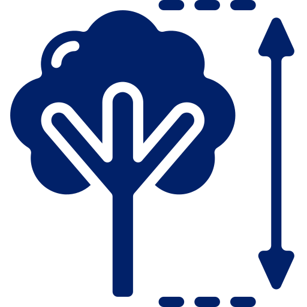
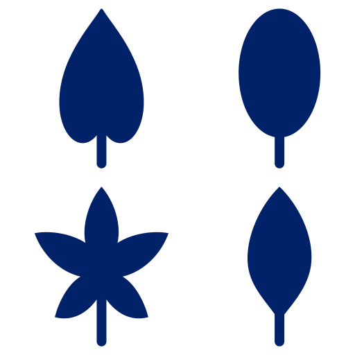
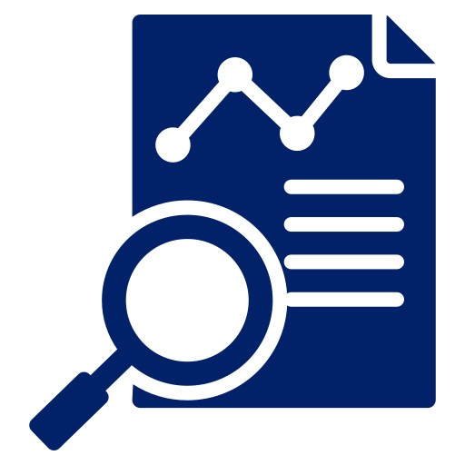
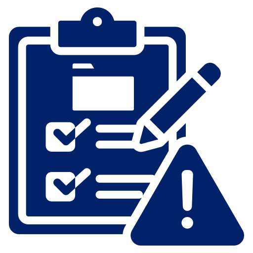

¿Cómo puedes participar según tu carrera?
🎓 Cada carrera aporta al proyecto desde diferentes enfoques. ¡Descubre tu rol!
Ingeniería en TI
Desarrollo web, dashboards, bases de datos e integración de sistemas.
- • Desarrollo web
- • Bases de datos
- • Dashboards
- • Automatización
Gestión Ambiental
Evaluación ambiental y análisis de servicios ecosistémicos.
- • Evaluación ambiental
- • Sostenibilidad
- • Conservación
- • Educación ambiental
Ingeniería Energética
Trabajo de campo y propuestas tecnológicas innovadoras.
- • Censo de árboles
- • Uso de apps móviles
- • Innovación tecnológica
- • Apoyo en campo
Salud Ocupacional
Seguridad en campo y evaluación de riesgos.
- • Evaluación de riesgos
- •Protocolos de seguridad
- • Supervisión
- • Capacitación
Ingeniería Agronómica
Identificación de especies y manejo del arbolado urbano.
- • Taxonomía
- • Clasificación
- • Manejo de árboles
- • Evaluación biológica
Áreas de Trabajo del Proyecto
El proyecto de Gestión del Árbol Urbano permite a los estudiantes participar en diferentes áreas según sus habilidades e intereses. Cada área contribuye al desarrollo del censo, análisis y gestión de la información del arbolado urbano en la comunidad.

Censo de Árboles
Registro en campo de árboles utilizando herramientas como Survey123, incluyendo ubicación, características y estado.

Taxonomía
Identificación y clasificación de especies mediante análisis de datos y registros fotográficos.

Base de Datos
Gestión, limpieza y organización de la información recolectada para su uso en sistemas del proyecto.

Aplicaciones y SIG
Desarrollo y mejora de herramientas tecnológicas y sistemas de información geográfica.
Bioalfabetización
Educación ambiental y trabajo con comunidades sobre el manejo adecuado del arbolado urbano.
Control de Calidad
Verificación y validación de los datos recolectados para asegurar precisión en el proyecto.